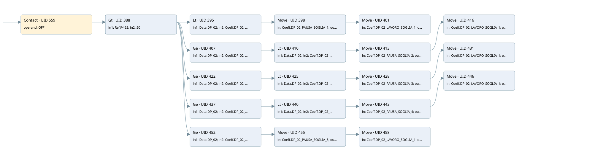

time work/pause by dp02
filter · 검색 색인 순서 3 · 원본 내부 NID 추정 2
백업 PLF 원본의 2724898 바이트 위치에서 복원한 XML. 검색 문서 1884의 객체 키 161022002611000000000000와 연결했다. 이름 해석 38/39개. 남은 RefId는 상수 또는 미해석 참조다.
연결 구조 다시 그리기
원본 Part/PCon/Wire를 이용한 연결도다. TIA 화면의 래더 배치 또는 실행 결과를 재현한 그림은 아니다. 핀 연결은 아래 표와 원본 XML을 기준으로 읽는다. 노드 위에 마우스를 두면 피연산자 이름을 볼 수 있다.

접점·코일·블록과 피연산자
| Part UID | Gate | Negated 핀 | 연결 피연산자 |
|---|---|---|---|
| 559 | Contact | operand = OFF | |
| 388 | Gt | in1 = RefId 3 / ORef UID 462; in2 = 50 | |
| 395 | Lt | in1 = Data.DP_02; in2 = Coeff.DP_02_SOGLIA_1 | |
| 398 | Move | in = Coeff.DP_02_PAUSA_SOGLIA_1; out1 = Data.LAVA_PAUSA | |
| 401 | Move | in = Coeff.DP_02_LAVORO_SOGLIA_1; out1 = Data.LAVA_LAVORO | |
| 407 | Ge | in1 = Data.DP_02; in2 = Coeff.DP_02_SOGLIA_1 | |
| 410 | Lt | in1 = Data.DP_02; in2 = Coeff.DP_02_SOGLIA_2 | |
| 413 | Move | in = Coeff.DP_02_PAUSA_SOGLIA_2; out1 = Data.LAVA_PAUSA | |
| 416 | Move | in = Coeff.DP_02_LAVORO_SOGLIA_1; out1 = Data.LAVA_LAVORO | |
| 422 | Ge | in1 = Data.DP_02; in2 = Coeff.DP_02_SOGLIA_2 | |
| 425 | Lt | in1 = Data.DP_02; in2 = Coeff.DP_02_SOGLIA_3 | |
| 428 | Move | in = Coeff.DP_02_PAUSA_SOGLIA_3; out1 = Data.LAVA_PAUSA | |
| 431 | Move | in = Coeff.DP_02_LAVORO_SOGLIA_1; out1 = Data.LAVA_LAVORO | |
| 437 | Ge | in1 = Data.DP_02; in2 = Coeff.DP_02_SOGLIA_3 | |
| 440 | Lt | in1 = Data.DP_02; in2 = Coeff.DP_02_SOGLIA_4 | |
| 443 | Move | in = Coeff.DP_02_PAUSA_SOGLIA_4; out1 = Data.LAVA_PAUSA | |
| 446 | Move | in = Coeff.DP_02_LAVORO_SOGLIA_1; out1 = Data.LAVA_LAVORO | |
| 452 | Ge | in1 = Data.DP_02; in2 = Coeff.DP_02_SOGLIA_4 | |
| 455 | Move | in = Coeff.DP_02_PAUSA_SOGLIA_5; out1 = Data.LAVA_PAUSA | |
| 458 | Move | in = Coeff.DP_02_LAVORO_SOGLIA_1; out1 = Data.LAVA_LAVORO |
접점 경로를 펼친 조건식
Contact·O/A·비교기의 원본 연결을 읽기 쉽게 펼친 보조 해석이다. POWER는 전원 레일 시작을 뜻한다. 호출 블록·에지·타이머의 내부 동작과 다중 쓰기 순서는 이 표로 실행 검증하지 않았다. 미해석 핀과 RefId는 원문 연결표에서 확인한다.
| UID | 동작 | 대상 | 원본 접점 경로 | 내용 |
|---|---|---|---|---|
| 398 | Move | Data.LAVA_PAUSA | ((OFF AND [ORef UID 462 > 50]) AND [Data.DP_02 < Coeff.DP_02_SOGLIA_1]) | Move 입력 Coeff.DP_02_PAUSA_SOGLIA_1 |
| 401 | Move | Data.LAVA_LAVORO | Move UID 398.eno (블록 동작 확인) | Move 입력 Coeff.DP_02_LAVORO_SOGLIA_1 |
| 413 | Move | Data.LAVA_PAUSA | (((OFF AND [ORef UID 462 > 50]) AND [Data.DP_02 >= Coeff.DP_02_SOGLIA_1]) AND [Data.DP_02 < Coeff.DP_02_SOGLIA_2]) | Move 입력 Coeff.DP_02_PAUSA_SOGLIA_2 |
| 416 | Move | Data.LAVA_LAVORO | Move UID 413.eno (블록 동작 확인) | Move 입력 Coeff.DP_02_LAVORO_SOGLIA_1 |
| 428 | Move | Data.LAVA_PAUSA | (((OFF AND [ORef UID 462 > 50]) AND [Data.DP_02 >= Coeff.DP_02_SOGLIA_2]) AND [Data.DP_02 < Coeff.DP_02_SOGLIA_3]) | Move 입력 Coeff.DP_02_PAUSA_SOGLIA_3 |
| 431 | Move | Data.LAVA_LAVORO | Move UID 428.eno (블록 동작 확인) | Move 입력 Coeff.DP_02_LAVORO_SOGLIA_1 |
| 443 | Move | Data.LAVA_PAUSA | (((OFF AND [ORef UID 462 > 50]) AND [Data.DP_02 >= Coeff.DP_02_SOGLIA_3]) AND [Data.DP_02 < Coeff.DP_02_SOGLIA_4]) | Move 입력 Coeff.DP_02_PAUSA_SOGLIA_4 |
| 446 | Move | Data.LAVA_LAVORO | Move UID 443.eno (블록 동작 확인) | Move 입력 Coeff.DP_02_LAVORO_SOGLIA_1 |
| 455 | Move | Data.LAVA_PAUSA | ((OFF AND [ORef UID 462 > 50]) AND [Data.DP_02 >= Coeff.DP_02_SOGLIA_4]) | Move 입력 Coeff.DP_02_PAUSA_SOGLIA_5 |
| 458 | Move | Data.LAVA_LAVORO | Move UID 455.eno (블록 동작 확인) | Move 입력 Coeff.DP_02_LAVORO_SOGLIA_1 |
원본 배선 연결
| Wire UID | 동일 Wire 연결 끝점 |
|---|---|
| 561 | Powerrail {} ↔ Part 559.in |
| 500 | ORef 461 (OFF) ↔ Part 559.operand |
| 560 | Part 559.out ↔ Part 388.pre |
| 501 | ORef 462 (RefId 3) ↔ Part 388.in1 |
| 502 | ORef 463 (50) ↔ Part 388.in2 |
| 503 | Part 388.out ↔ Part 395.pre ↔ Part 407.pre ↔ Part 422.pre ↔ Part 437.pre ↔ Part 452.pre |
| 504 | ORef 464 (Data.DP_02) ↔ Part 395.in1 |
| 505 | ORef 465 (Coeff.DP_02_SOGLIA_1) ↔ Part 395.in2 |
| 506 | Part 395.out ↔ Part 398.en |
| 508 | ORef 466 (Coeff.DP_02_PAUSA_SOGLIA_1) ↔ Part 398.in |
| 510 | Part 398.eno ↔ Part 401.en |
| 509 | Part 398.out1 ↔ ORef 467 (Data.LAVA_PAUSA) |
| 511 | ORef 468 (Coeff.DP_02_LAVORO_SOGLIA_1) ↔ Part 401.in |
| 512 | Part 401.out1 ↔ ORef 469 (Data.LAVA_LAVORO) |
| 513 | ORef 470 (Data.DP_02) ↔ Part 407.in1 |
| 514 | ORef 471 (Coeff.DP_02_SOGLIA_1) ↔ Part 407.in2 |
| 515 | Part 407.out ↔ Part 410.pre |
| 516 | ORef 472 (Data.DP_02) ↔ Part 410.in1 |
| 517 | ORef 473 (Coeff.DP_02_SOGLIA_2) ↔ Part 410.in2 |
| 518 | Part 410.out ↔ Part 413.en |
| 520 | ORef 474 (Coeff.DP_02_PAUSA_SOGLIA_2) ↔ Part 413.in |
| 522 | Part 413.eno ↔ Part 416.en |
| 521 | Part 413.out1 ↔ ORef 475 (Data.LAVA_PAUSA) |
| 523 | ORef 476 (Coeff.DP_02_LAVORO_SOGLIA_1) ↔ Part 416.in |
| 524 | Part 416.out1 ↔ ORef 477 (Data.LAVA_LAVORO) |
| 525 | ORef 478 (Data.DP_02) ↔ Part 422.in1 |
| 526 | ORef 479 (Coeff.DP_02_SOGLIA_2) ↔ Part 422.in2 |
| 527 | Part 422.out ↔ Part 425.pre |
| 528 | ORef 480 (Data.DP_02) ↔ Part 425.in1 |
| 529 | ORef 481 (Coeff.DP_02_SOGLIA_3) ↔ Part 425.in2 |
| 530 | Part 425.out ↔ Part 428.en |
| 532 | ORef 482 (Coeff.DP_02_PAUSA_SOGLIA_3) ↔ Part 428.in |
| 534 | Part 428.eno ↔ Part 431.en |
| 533 | Part 428.out1 ↔ ORef 483 (Data.LAVA_PAUSA) |
| 535 | ORef 484 (Coeff.DP_02_LAVORO_SOGLIA_1) ↔ Part 431.in |
| 536 | Part 431.out1 ↔ ORef 485 (Data.LAVA_LAVORO) |
| 537 | ORef 486 (Data.DP_02) ↔ Part 437.in1 |
| 538 | ORef 487 (Coeff.DP_02_SOGLIA_3) ↔ Part 437.in2 |
| 539 | Part 437.out ↔ Part 440.pre |
| 540 | ORef 488 (Data.DP_02) ↔ Part 440.in1 |
| 541 | ORef 489 (Coeff.DP_02_SOGLIA_4) ↔ Part 440.in2 |
| 542 | Part 440.out ↔ Part 443.en |
| 544 | ORef 490 (Coeff.DP_02_PAUSA_SOGLIA_4) ↔ Part 443.in |
| 546 | Part 443.eno ↔ Part 446.en |
| 545 | Part 443.out1 ↔ ORef 491 (Data.LAVA_PAUSA) |
| 547 | ORef 492 (Coeff.DP_02_LAVORO_SOGLIA_1) ↔ Part 446.in |
| 548 | Part 446.out1 ↔ ORef 493 (Data.LAVA_LAVORO) |
| 549 | ORef 494 (Data.DP_02) ↔ Part 452.in1 |
| 550 | ORef 495 (Coeff.DP_02_SOGLIA_4) ↔ Part 452.in2 |
| 551 | Part 452.out ↔ Part 455.en |
| 553 | ORef 496 (Coeff.DP_02_PAUSA_SOGLIA_5) ↔ Part 455.in |
| 555 | Part 455.eno ↔ Part 458.en |
| 554 | Part 455.out1 ↔ ORef 497 (Data.LAVA_PAUSA) |
| 556 | ORef 498 (Coeff.DP_02_LAVORO_SOGLIA_1) ↔ Part 458.in |
| 557 | Part 458.out1 ↔ ORef 499 (Data.LAVA_LAVORO) |
식별자 해석 근거 39개
| ORef UID | RefId | 이름 | IdentXmlPart 파일 | 해석 방법 |
|---|---|---|---|---|
| 461 | 1 | OFF | 0594-IdentXmlPart.xml | UID/RID + search-text + NID agreement |
| 462 | 3 | 미해석 RefId | 식별 선언 원본 참조 | 미해석 |
| 463 | 30 | 50 | 0597-IdentXmlPart.xml | literal candidate: UID/RID/NID + nearby named declarations + search-text agreement |
| 464 | 31 | Data.DP_02 | 0596-IdentXmlPart.xml | UID/RID + search-text + NID agreement |
| 465 | 32 | Coeff.DP_02_SOGLIA_1 | 0596-IdentXmlPart.xml | UID/RID + search-text + NID agreement |
| 466 | 34 | Coeff.DP_02_PAUSA_SOGLIA_1 | 0596-IdentXmlPart.xml | UID/RID + search-text + NID agreement |
| 467 | 11 | Data.LAVA_PAUSA | 0596-IdentXmlPart.xml | UID/RID + search-text + NID agreement |
| 468 | 36 | Coeff.DP_02_LAVORO_SOGLIA_1 | 0596-IdentXmlPart.xml | UID/RID + search-text + NID agreement |
| 469 | 14 | Data.LAVA_LAVORO | 0596-IdentXmlPart.xml | UID/RID + search-text + NID agreement |
| 470 | 31 | Data.DP_02 | 0596-IdentXmlPart.xml | UID/RID + search-text + NID agreement |
| 471 | 32 | Coeff.DP_02_SOGLIA_1 | 0596-IdentXmlPart.xml | UID/RID + search-text + NID agreement |
| 472 | 31 | Data.DP_02 | 0596-IdentXmlPart.xml | UID/RID + search-text + NID agreement |
| 473 | 37 | Coeff.DP_02_SOGLIA_2 | 0596-IdentXmlPart.xml | UID/RID + search-text + NID agreement |
| 474 | 39 | Coeff.DP_02_PAUSA_SOGLIA_2 | 0596-IdentXmlPart.xml | UID/RID + search-text + NID agreement |
| 475 | 11 | Data.LAVA_PAUSA | 0596-IdentXmlPart.xml | UID/RID + search-text + NID agreement |
| 476 | 36 | Coeff.DP_02_LAVORO_SOGLIA_1 | 0596-IdentXmlPart.xml | UID/RID + search-text + NID agreement |
| 477 | 14 | Data.LAVA_LAVORO | 0596-IdentXmlPart.xml | UID/RID + search-text + NID agreement |
| 478 | 31 | Data.DP_02 | 0596-IdentXmlPart.xml | UID/RID + search-text + NID agreement |
| 479 | 37 | Coeff.DP_02_SOGLIA_2 | 0596-IdentXmlPart.xml | UID/RID + search-text + NID agreement |
| 480 | 31 | Data.DP_02 | 0596-IdentXmlPart.xml | UID/RID + search-text + NID agreement |
| 481 | 41 | Coeff.DP_02_SOGLIA_3 | 0596-IdentXmlPart.xml | UID/RID + search-text + NID agreement |
| 482 | 43 | Coeff.DP_02_PAUSA_SOGLIA_3 | 0596-IdentXmlPart.xml | UID/RID + search-text + NID agreement |
| 483 | 11 | Data.LAVA_PAUSA | 0596-IdentXmlPart.xml | UID/RID + search-text + NID agreement |
| 484 | 36 | Coeff.DP_02_LAVORO_SOGLIA_1 | 0596-IdentXmlPart.xml | UID/RID + search-text + NID agreement |
| 485 | 14 | Data.LAVA_LAVORO | 0596-IdentXmlPart.xml | UID/RID + search-text + NID agreement |
| 486 | 31 | Data.DP_02 | 0596-IdentXmlPart.xml | UID/RID + search-text + NID agreement |
| 487 | 41 | Coeff.DP_02_SOGLIA_3 | 0596-IdentXmlPart.xml | UID/RID + search-text + NID agreement |
| 488 | 31 | Data.DP_02 | 0596-IdentXmlPart.xml | UID/RID + search-text + NID agreement |
| 489 | 45 | Coeff.DP_02_SOGLIA_4 | 0596-IdentXmlPart.xml | UID/RID + search-text + NID agreement |
| 490 | 47 | Coeff.DP_02_PAUSA_SOGLIA_4 | 0596-IdentXmlPart.xml | UID/RID + search-text + NID agreement |
| 491 | 11 | Data.LAVA_PAUSA | 0596-IdentXmlPart.xml | UID/RID + search-text + NID agreement |
| 492 | 36 | Coeff.DP_02_LAVORO_SOGLIA_1 | 0596-IdentXmlPart.xml | UID/RID + search-text + NID agreement |
| 493 | 14 | Data.LAVA_LAVORO | 0596-IdentXmlPart.xml | UID/RID + search-text + NID agreement |
| 494 | 31 | Data.DP_02 | 0596-IdentXmlPart.xml | UID/RID + search-text + NID agreement |
| 495 | 45 | Coeff.DP_02_SOGLIA_4 | 0596-IdentXmlPart.xml | UID/RID + search-text + NID agreement |
| 496 | 50 | Coeff.DP_02_PAUSA_SOGLIA_5 | 0596-IdentXmlPart.xml | UID/RID + search-text + NID agreement |
| 497 | 11 | Data.LAVA_PAUSA | 0596-IdentXmlPart.xml | UID/RID + search-text + NID agreement |
| 498 | 36 | Coeff.DP_02_LAVORO_SOGLIA_1 | 0596-IdentXmlPart.xml | UID/RID + search-text + NID agreement |
| 499 | 14 | Data.LAVA_LAVORO | 0596-IdentXmlPart.xml | UID/RID + search-text + NID agreement |
검색 코드 보조 자료
참조 명칭을 찾기 위한 자료이며 실행 순서나 AND/OR 관계는 위 연결표로 확인한다.
"off" "data".ev_filter_on 50 "data".dp_02 "coeff".dp_02_soglia_1 move "coeff".dp_02_pausa_soglia_1 move "coeff".dp_02_lavoro_soglia_1 "data".dp_02 "coeff".dp_02_soglia_1 "data".dp_02 "coeff".dp_02_soglia_2 move "coeff".dp_02_pausa_soglia_2 move "coeff".dp_02_lavoro_soglia_1 "data".lava_pausa "data".lava_lavoro "data".dp_02 "coeff".dp_02_soglia_2 "data".dp_02 "coeff".dp_02_soglia_3 move "coeff".dp_02_pausa_soglia_3 move "coeff".dp_02_lavoro_soglia_1 "data".lava_pausa "data".lava_lavoro "data".dp_02 "coeff".dp_02_soglia_3 "data".dp_02 "coeff".dp_02_soglia_4 move "coeff".dp_02_pausa_soglia_4 move "coeff".dp_02_lavoro_soglia_1 "data".lava_pausa "data".lava_lavoro "data".dp_02 "coeff".dp_02_soglia_4 move "coeff".dp_02_pausa_soglia_5 move "coeff".dp_02_lavoro_soglia_1 "data".lava_pausa "data".lava_lavoro "data".lava_pausa "data".lava_lavoro